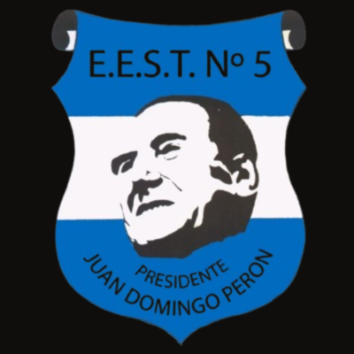

Modalidad Maestro Mayor de Obras
La especialidad Maestro Mayor de Obras brinda una formación técnica orientada al diseño, la planificación y la construcción de edificios. A lo largo de esta modalidad, los estudiantes aprenden a interpretar y elaborar planos, conocer materiales de construcción, utilizar herramientas de dibujo técnico y comprender las distintas etapas de una obra.
Esta formación combina conocimientos teóricos y prácticos para desarrollar habilidades relacionadas con la arquitectura, la construcción y la resolución de problemas. Además, prepara a los estudiantes para continuar sus estudios superiores e incorporarse al mundo laboral en el ámbito de la construcción.
